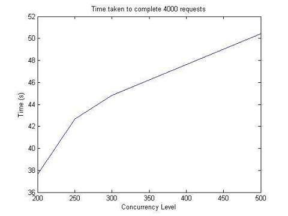

The vast discipline of music can be sub-categorized into two domains: theory and practice.
During music lessons, children pre-dominantly learn theory, leaving less time for practice with their instructor.
Children are told to practice their instruments independently at home.
Children can play exercises at home but they primarily struggle relative pitch and perfect pitch detection.
The problem is children do not have the resources to practice these two essential skills, and owing to the complexity of manual, independent exercises, nor do they have the motivation.
Current software solutions available for ear training do not attempt to change this fact.
Plenty of articles try to motivate students on the importance of ear training, yet fail to do so as well.
There are no free devices that exist to help verify that a music student is detecting a pitch right.
There are multiple desktop applications that provide pitch detection but they are complex, dated and expensive.
We offer an interactive experience that will allow users to learn these techniques in a straightforward, yet exciting, way.
With interactive online games a student will get instant results and feedback on how well they can identify, distinguish pitch and chords or even reproduce them accurately.
From these game results we can measure their progress on their own personalized profile.
Team Member |
Roles |
Bio |
Experience |
| Brandon Oliver |
-Front End UI -Back End Database -Back End Game 4 -Back End Profile Page |
I love to program almost as much as I love to eat. I hope to be able to work in many cities around the world and try their local cuisines. | I have expanded my knowledge in backend web programming as well as security and scaling strategies. Also due to the nature of this project I was able to learn a lot about sound processing. |
| Fiona Leung |
-Front End UI -Back End Database -Back End Game 1 and 2 -Back End Profile Page |
I like studying computer science, but currently I am not entirely sure which specific CS discipline CS I want to pursue as a career. I still have plenty to explore. In my spare time, I practice drawing, crafting and go hours on end with customizing, modifying, or tweaking things I have access to. | I learned a bit about frontend but my mainly learned backend web programming such as: nodeJS, mongodb and jquery. Since I worked mostly on the UI, I was able to learn a lot of UI and UX techniques to design an aesthetically pleasing web page. |
|
Soon Chee Loong
|
-Back End Database -Back End Game 1, 2, 3 and 4 |
I am passionate about Web Programming. My dream is to create the next major social network site. I have experience programming robotics, signal processing algorithms, controls, and constraint programming. I definitely love what I do. picture. | I learned a lot about backend programming and sound processing. I mostly worked on the web sites games so I gained a lot of experience with javascript and audio input/output. |
| Ding Yi lu |
-Back End Database -Setting up Heroku -Back End Profile -Back End Game 3 |
I like polar bears. I am a food and travel enthusiast. In the future I hope to travel to Malaysia, India, and Japan because they have some of the best food in the world and I would like to eat some authentic food there. Once I graduate, I hope to find a job and pay back my student loans. With enough cash, I will begin to travel around the world. | I mainly learned about Node.js in this course. I learned more about how the back-end works. I learned about security problems of websites and how to protect against them. |
| Week | Date | Task | Member |
| 1 | 05/15/2014 |
|
Felix Soon Brandon Fiona |
| 2 | 05/20/2014 |
|
Felix Soon Brandon Fiona |
| 3 | 05/27/2014 |
|
Felix Soon Brandon Fiona |
| 4 | 06/17//2014 |
|
Felix Soon Brandon Fiona |
| 5 | 06/24/2014 |
|
Fiona Soon |
| 6 | 06/31/2014 |
|
Felix Brandon |
| 7 | 07/07/2014 |
|
Soon Brandon |
| 8 | 07/14/2014 |
|
Fiona Felix |
| 9 | 07/21/2014 |
|
Felix Brandon |
| 10 | 07/28/2014 |
|
Felix |
| 11 | 08/04/2014 |
|
Fiona Brandon |
Please refer to sprint backlog and progress backlog

We used security measures such as hashing and salting to decrease the possibility stolen passwords and emails.
We also relied on MongoDB to prevent SQL injection to ensure that our data queries are executed safely.
In terms of security limitations, we have nothing to prevent users from using third party software to increase their scores in game.
Unfortunately due to the lack of resources and personal knowledge we were unable to increase the accuracy of our pitch detection feature.
If we were to improve our current product, we would: